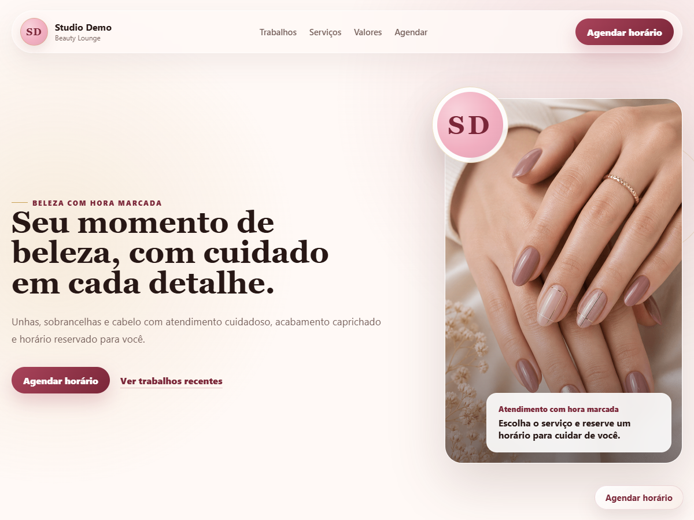
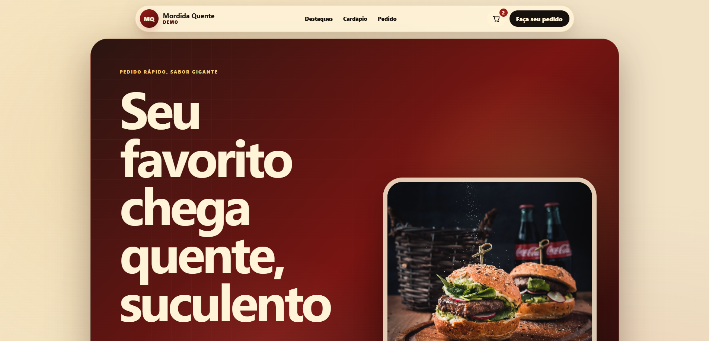
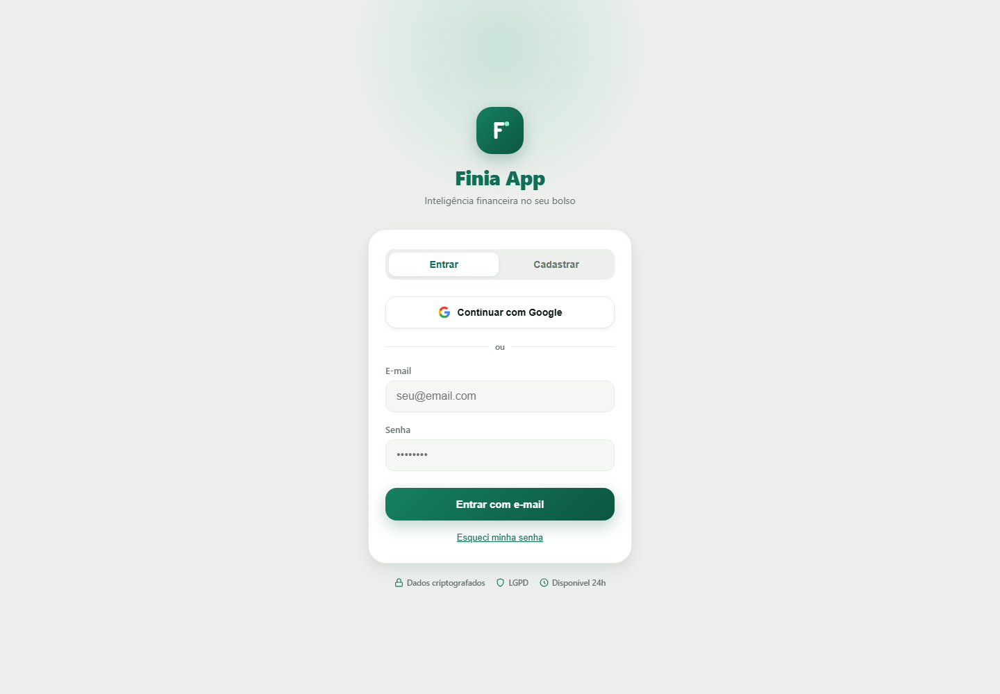
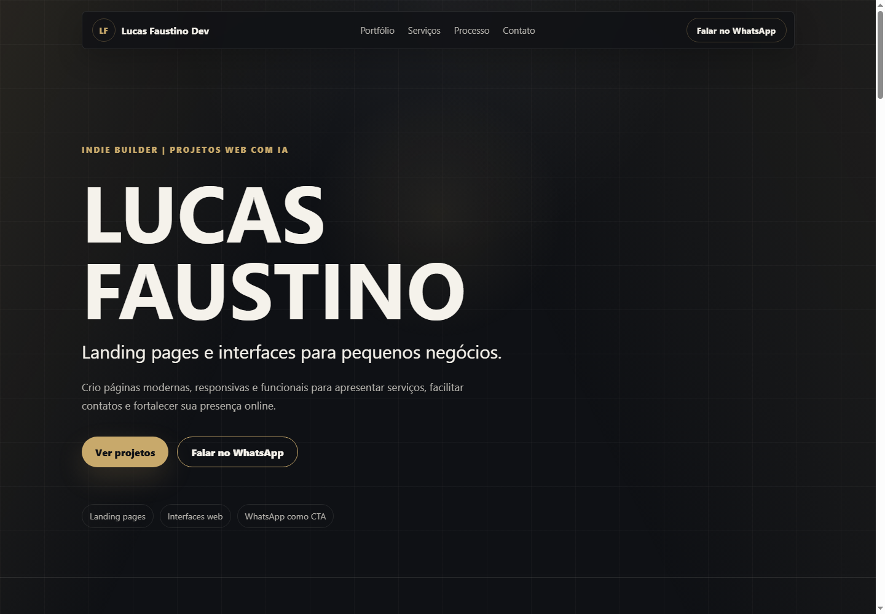

Landing page
Landing Page para Salão de Beleza
Página responsiva para apresentar serviços, trabalhos realizados, valores e facilitar o agendamento pelo WhatsApp.
Ver projetoIndie Builder | Projetos web com IA
Landing pages e soluções digitais para pequenos negócios.
Crio páginas modernas, responsivas e funcionais para apresentar serviços, facilitar contatos e fortalecer sua presença online.
Portfólio

Página responsiva para apresentar serviços, trabalhos realizados, valores e facilitar o agendamento pelo WhatsApp.
Ver projeto
Experiência responsiva com destaques do cardápio, carrinho de pedido, formulário de entrega e finalização pelo WhatsApp.
Ver projeto
Assistente financeiro com IA em desenvolvimento, com foco em organização, relatórios e planejamento pessoal.
Ver projeto
Landing page desenvolvida para apresentar meus trabalhos, estudos e projetos digitais. A própria página que você está navegando agora faz parte do meu portfólio.
O que eu faço
Páginas para apresentar serviços, produtos, portfólio e facilitar o contato com clientes.
Interfaces para sistemas, painéis administrativos, formulários e ferramentas web.
Projetos autorais e ferramentas web criadas para resolver problemas de forma simples.
Para quem eu crio
Salões, manicures, barbearias, prestadores de serviço, lojas locais, profissionais autônomos e projetos digitais em fase inicial.
Processo
Você me explica seu negócio, serviço ou ideia.
Definimos as seções principais: apresentação, serviços, fotos, valores, contato e CTA.
Eu construo a página responsiva, com visual moderno e foco em clareza.
Você revisa, fazemos ajustes combinados e publicamos online.
Abordagem
Uso inteligência artificial como copiloto para acelerar pesquisa, ideias visuais, escrita, organização e desenvolvimento, mas cada decisão é revisada com foco no objetivo do projeto.
Sobre mim
Sou Lucas Faustino, Indie Builder focado em criar landing pages, interfaces e projetos web simples, bonitos e funcionais. Meu objetivo é ajudar pequenos negócios a terem uma presença online mais clara, profissional e acessível, usando tecnologia e IA de forma prática.
Tabela de Valores
Uma página profissional para reunir informações importantes, apresentar seus serviços e facilitar o contato com clientes.
Vamos conversar?
Me chama no WhatsApp e me conta o que você precisa.
Falar no WhatsApp